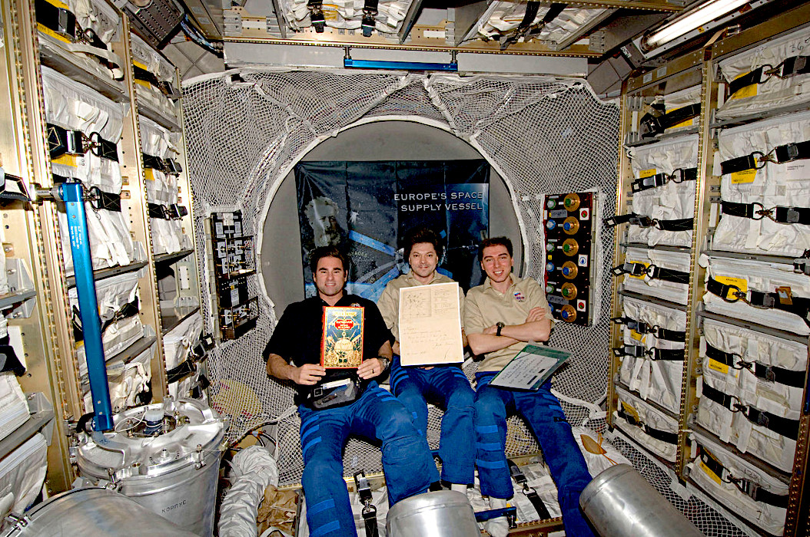
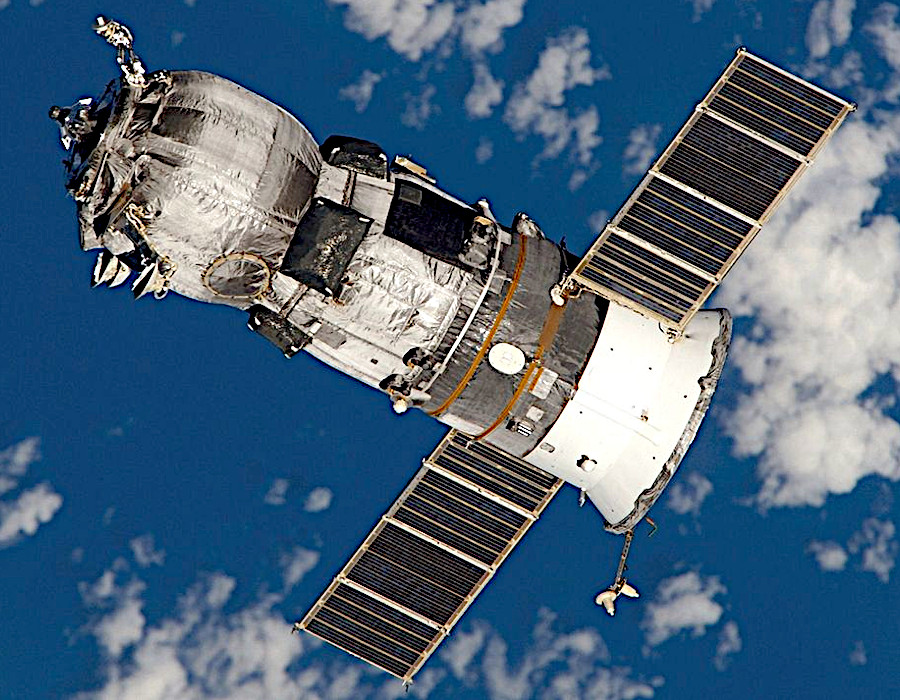
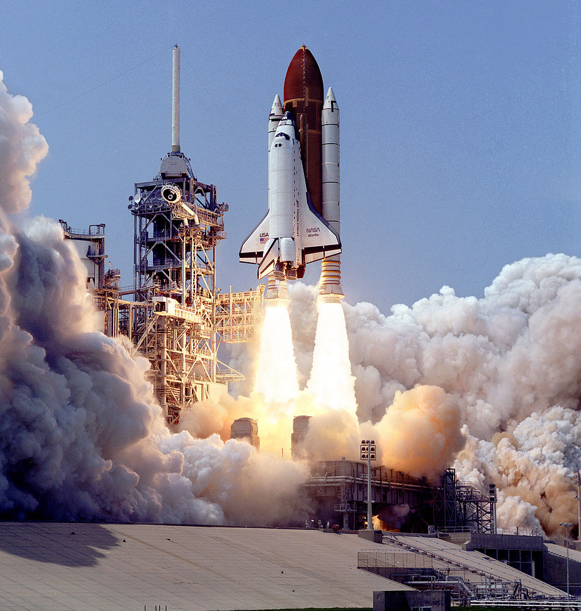
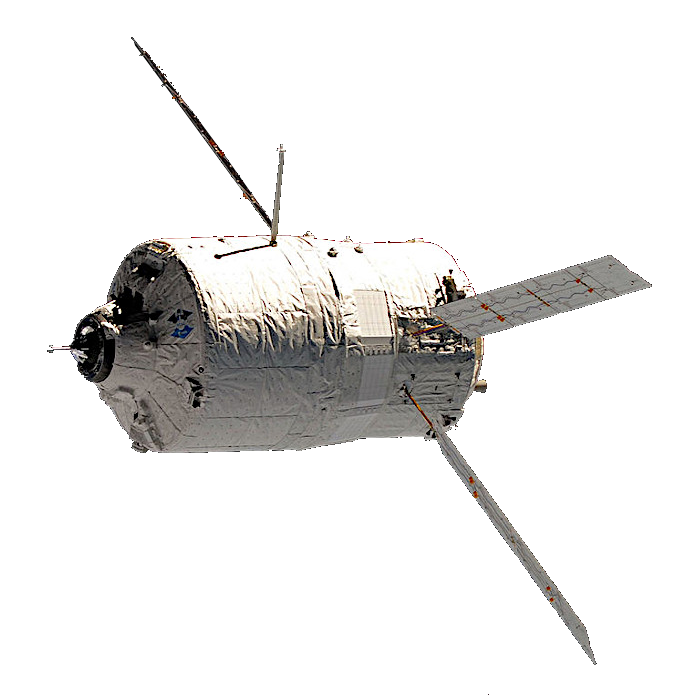
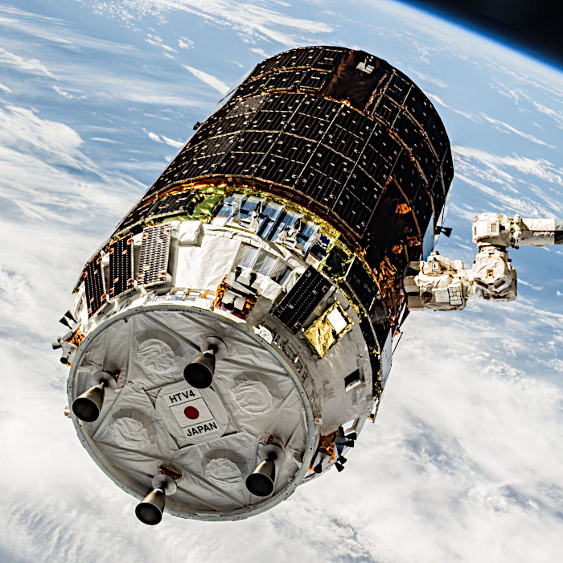
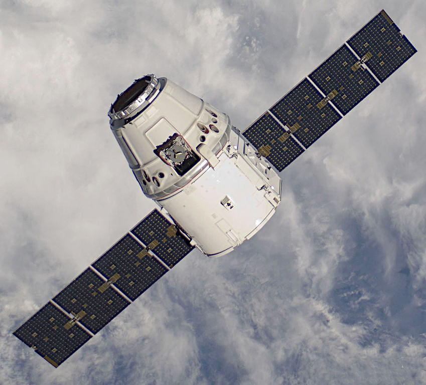
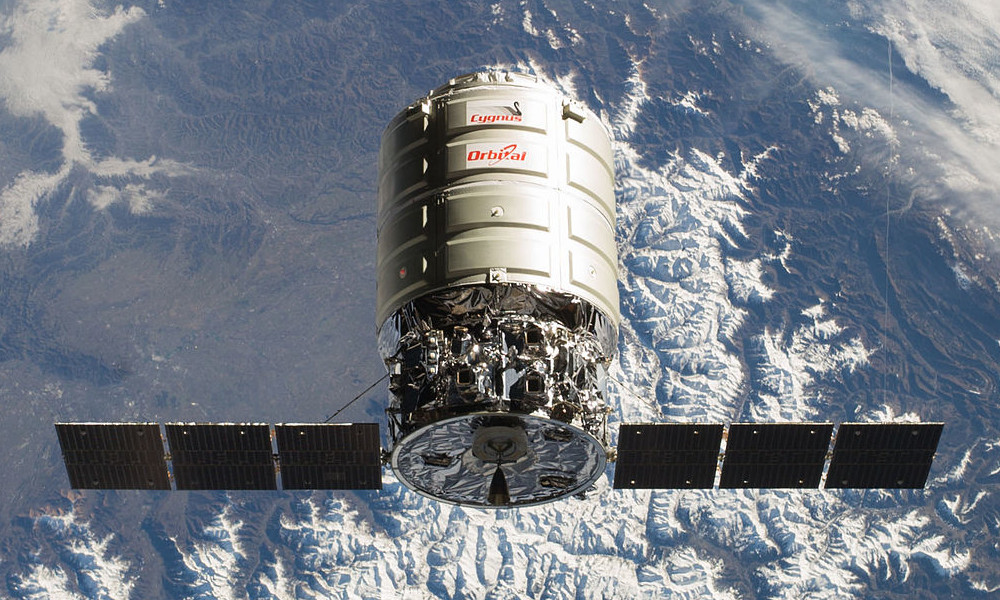
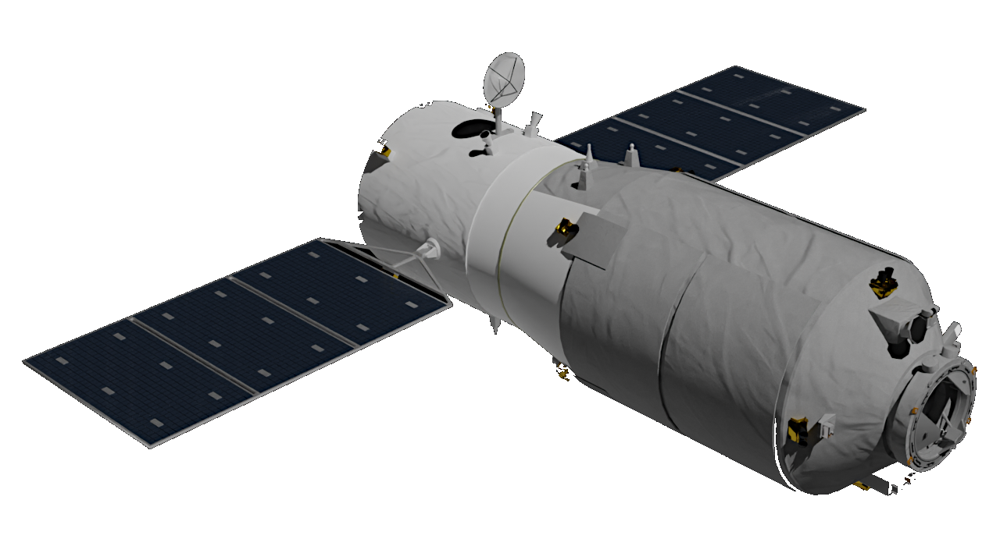

Supplies include all those goods needed to provide life support for the personnel and to operate and maintain the stations. Regular deliveries are required of consumables such as fuel, water, food, oxygen and spare parts.

Most stations are also working research stations requiring specific equipment and the transport of experiment materials from and to the Earth.
The U.S. Space Shuttle was large enough to carry personnel and large amounts of supplies, however all other personnel transport spacecraft could only carry small amounts of cargo. This was sufficient for the earlier short duration missions. As mission durations increased, dedicated cargo only craft were required for re-supply.
The following spacecraft have been used for station re-supply.

The Progress spacecraft is designed to only carry cargo. It uses a Soviet/Russian Soyuz launcher to reach orbit and its own engines to rendezvous and dock with the station. It can be docked automatically or by remote control.
Progress spacecraft have been used to carry cargo to the Soviet/Russian Soviet/Russian Salyut, Mir and International Space Station (ISS). Upgraded versions are currently used to supply the ISS.
Progress craft are not re-used and are destroyed by de-orbiting and re-entry into the Earth's atmosphere.
The U.S. Space Shuttle is the crewed component of the U.S. Space Transport System, or STS, which includes the Shuttle, large external fuel tank and two solid rocket boosters. The Shuttle was designed for personnel and cargo, including large station components. It used its own engines and the booster rockets to launch and its own engines for rendezvous, docking and de-orbiting to return to Earth.

Shuttles have supported the Soviet/Russian Mir station and were used extensively to build and support the International Space Station (ISS).
On a number of re-supply missions Shuttles carried a
Multi-Purpose Logistics Module (MPLM) to the ISS. MPLMs are pressurised cargo module which carried equipment, supplies, laboratory racks and experiments for the station.
After the shuttle docked to the station the MPLM is lifted from the cargo bay using the shuttle's or the station's robot arm and connected to a station berthing port. The MPLM is then unloaded directly into the station and re-loaded with waste and items to be returned to Earth. MPLM's are returned in the Shuttle's cargo bay.

The Automated Transfer Vehicle (ATV), originally Ariane Transfer Vehicle, was an expendable cargo spacecraft developed by the European Space Agency (ESA). It could carry three times the cargo of the Russian Progress cargo spacecraft to the ISS.
The ATV was used only for cargo transport to the International Space Station (ISS). It was able to dock automatically with the station and could use its engines for station re-boost.
There were five ATV flights to the station, between 2008 and 2014, all launched by the Ariane 5 heavy-lift launch vehicles. ATV craft are not re-used and are destroyed by de-orbiting and re-entry into the Earth's atmosphere.

H-II Transfer Vehicle (HTV) was an expendable cargo spacecraft developed by the Japanese Space Agency (JAXA).
It was used for cargo only transport to the International Space Station (ISS). It could carry twice the cargo of the Russian Progress cargo spacecraft.
The original HTV was replaced in 2025 with a new completely re-designed variant, the HTV-X.
HTV and HTV-X use a Japanese H-IIB launcher to reach orbit and their own engines to rendezvous with the station. They do not dock directly but are berthed to the ISS using the station robotic arm. They are not re-used and are destroyed by de-orbiting and re-entry into the Earth's atmosphere.

The Dragon spacecraft was developed by the U.S. commercial company SpaceX. There have been three versions, so far, designed to carry cargo and personnel to the International Space Station (ISS).
* Dragon 1 (Retired) - Did not dock directly with the ISS but was grappled using the station robotic arm and berthed to a port on the station.
* Dragon 2 (Cargo) - Replaced Dragon 1. Uses its own engines to rendezvous and dock with the station.
* Dragon 2 (Crew) - Designed for personnel transport, refer to section "Station personnel Transport" above.
Both the personnel and cargo variants of Dragon use a SpaceX Falcon 9 launcher to reach orbit and their own engines to rendezvous and dock with the station. They are both are designed to return safely to Earth with personnel or materials.
The Cygnus spacecraft is an expendable cargo only spacecraft originally developed by the U.S. commercial company Orbital Sciences Corporation. It is now manufactured and launched by the U.S. commercial company Northrop Grumman Innovation Systems.

Cygnus is designed to carry only cargo to the International Space Station (ISS). It uses an Antares launcher to reach orbit and its own engines to rendezvous with the station. The Antares launcher were developed by Orbital Sciences Corporation in the U.S. and now manufactured and launched by Northrop Grumman Innovation Systems also in the U.S.
Over time, Cygnus has been upgraded to increase its size and capabilities. The standard Cygnus variant was replaced by an "Enhanced" version in 2015. This version was replaced by the further enlarged Cygnus XL variant in 2025.
Cygnus does not dock directly with the ISS but is berthed using the station robotic arm. It is not re-used and is destroyed by de-orbiting and re-entry into the Earth's atmosphere.

The Tianzhou automated cargo spacecraft (TZ) was developed from China's first prototype space station Tiangong-1 and is almost identical in appearance and size. It was first tested by docking with the Tiangong-2 station and is now used to resupply the modular Tiangong station.
Tianzhou is launched into orbit using a Chinese Long March 7 carrier rocket. It rendezvous with the station using its own engines and docks automatically. It is not re-used and is destroyed by de-orbiting and re-entry into the Earth's atmosphere.
The table below lists all the spacecraft used to transport cargo to each station.
Text in the table body hi-lighted in gold links to another rdata space article page. These links open in a new tab. Table head remains visible during scrolling.
| Date Range | Spacecraft | ID | Launcher | Stations | Country | Notes |
| 1978-1990 | Progress | 7K-TG | Soyuz-U, Soyuz-U2 | Salyut, Mir | U.S.S.R. | Automatic or remote control docking. |
| 1989-2009 | Progress M | M | Soyuz-U, Soyuz-U2 | Mir, ISS | U.S.S.R., Russia | Automatic or remote control docking. |
| 1995-2011 | Space Shuttle | STS | STS | Mir, ISS | U.S. | Transport of cargo as well as personnel and station components. |
| 2000-2004 | Progress M1 | M1 | Soyuz-U, Soyuz-FG | Mir, ISS | Russia | Automatic or remote control docking. |
| 2001 | Progress M-SO1 | M-SO1 | Soyuz-U | ISS | Russia | Modified Progress M to carry ISS Pirs module. |
| 2008-2014 | Automated Transfer Vehicle | ATV | Ariane 5 | ISS | Europe | Remote control docking. |
| 2008-2015 | Progress M-M | M-M | Soyuz-U, Soyuz-2.1a | ISS | Russia | Automatic or remote control docking. |
| 2009 | Progress M-RM2 | M-SO2 | Soyuz-U | ISS | Russia | Modified Progress M to carry ISS Poisk module. |
| 2009-2019 | H-II Transfer Vehicle | HTV | HIIB | ISS | Japan | Remote control docking using station robot arm. |
| 2012-2020 | Dragon 1 | SpX, CRS | Falcon 9 | ISS | U.S. | Remote control docking. Cargo and station components. |
| 2013-2020 | Cygnus | Orb, OA, NG | Antares, Atlas V | ISS | U.S. | Remote control docking using station robot arm. |
| 2015-2020 | Progress MS | MS | Soyuz-U, Soyuz-FG, Soyuz-2.1a | ISS | Russia | Automatic or remote control docking. |
| 2017 - | Tianzhou | - | Long March 7 | Tiangong | China | Used for Tiangong-2 and Tiangong. Remote control docking. |
| 2020 - | Dragon 2 Cargo | SpX, CRS | Falcon 9 | ISS | U.S. | Remote control docking. Cargo and station components. |
| 2022-2024 | Cygnus Advanced | NG | Antares, Falcon 9 | ISS | U.S. | Remote control docking using station robot arm. |
| 2025 - | Cygnus XL | NG | Falcon 9 | ISS | U.S. | Remote control docking using station robot arm. |
| 2025 - | H-II Transfer Vehicle (New) | HTV-X | H3 | ISS | Japan | Remote control docking using station robot arm. |
{kind=link}
{kind=link}
{kind=link}
{kind=link}
{kind=link}
{kind=link}
{kind=link}
{kind=link}